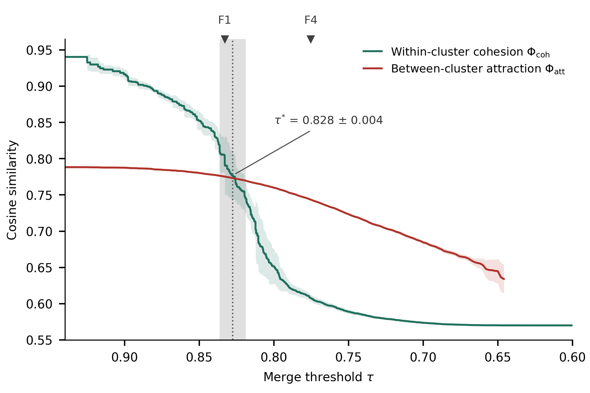

1. Background
Before consolidation the L4 risk-card inventory stood at 1,711 cards — a scale that is burdensome to manage in practice — and contained many duplicate items that differed only in wording, so merging similar cards was necessary. Classical agglomerative merging, joining the most similar pairs first, is straightforward; what remains is the threshold question: how far should merging go? This is the classical lossy-compression trade-off between fidelity and compression: merge too aggressively and the originally intended risk concepts blur away (fidelity loss); merge too conservatively and the card count barely shrinks (insufficient compression).
2. Experimental setup
We embedded each L4 card's Korean/English label and definition, and built the threshold graph G(τ)=(V, {(i,j): cos(ei,ej)≥τ}), connecting a card pair whenever its cosine similarity is at least τ. Treating the graph's connected components as merge clusters, we lowered τ from 0.94 to 0.50 in steps of 0.01 and measured the following.
- Mean within-cluster pairwise similarity — average merge quality (a proxy for fidelity)
- Mean of the per-cluster minimum pairwise similarity — the two least similar cards in each cluster; an early warning of over-merging
- Cluster count and largest-component size — indicators of compression and of chained merging
Rationale for the sweep range: 0.94 is the maximum pairwise similarity in the data — no merge occurs above it — and 0.50 lies below the all-pairs mean similarity (0.570), i.e. effectively random merging. The decision principle is the percolation phenomenon of threshold graphs: once τ passes a critical value, local clusters cascade into a giant component, so the point just before this phase transition is the natural limit of merging.
3. Results

Figure 1 | Within-cluster cohesion versus merge threshold τ (0.0001 steps, mean ± 2 s.d. over 10 subsamples). Top: mean within-cluster pairwise similarity (green), mean per-cluster minimum pairwise similarity (orange), random-merge baseline (grey). Bottom: cluster count, largest cluster, and second-largest cluster (log scale). Shading: fidelity band [0.80, 0.84], compression band [0.70, 0.71].
Two change points are observed in the quality curves.
- First transition (τ₁ = 0.818 ± 0.010) — the onset of chained merging, where mean cohesion drops sharply and the largest cluster expands abruptly.
- Second change point (τ₂ = 0.690 ± 0.009) — the point where worst-case cohesion collapses, deep in the supercritical regime where the giant cluster already holds 97% of cards. We interpret this not as a connectivity transition but as a collapse of worst-case merge quality.
4. Evolutionary criterion: cohesion–attraction crossing

Figure 2 | Crossing of within-cluster cohesion and between-cluster attraction. Within-cluster cohesion (green) and nearest-cluster attraction (red) cross at τ*=0.828±0.004 (0.833 on the full inventory). Beyond the crossing, clusters are pulled more toward outside neighbours than toward their own interior — a violation of the cohesive-species concept.
Two independent criteria — connectivity (first transition) and evolutionary cluster quality (the crossing) — point to the same boundary. The crossing point is density-dependent (about +0.024 per doubling of the card count) and moves upward as the inventory grows — it does not descend toward the compression tiers.
5. Flow tiers
| Tier | τ | Cards | Basis |
|---|---|---|---|
| Master | — | 1,612 | Canonical inventory |
| F1 | 0.8329 | 1,383 | Cohesion–attraction crossing; first flow state |
| F2 | 0.8033 | 1,154 | Intermediate flow state |
| F3 | 0.7903 | 1,038 | Intermediate flow state |
| F4 | 0.7753 | 901 | Audit tier; final flow state |
The tiers are successive states of a single granularity flow rather than independent cuts. From F1 to F4 the flow performs 28 consolidations, the cohesion of the affected groups descends from 0.8329 to 0.6062, and the validity rule first fires at step 15. F4, the terminal state, is the tier placed under human audit.
6. Interpretation and limitations
The fidelity band suits regulatory-mapping and audit uses where individual card distinctions matter, while the compression band suits overview and education uses; no single τ satisfies both purposes, which is the rationale for releasing multiple flow tiers. Merging is a conjunctive criterion: similarity is a necessary condition, with normative constraints (no cross-level merges; protected pairs kept separate) as additional conditions. Because the cohesion measured here is a proxy for merge quality, final confirmation rests on human evaluation of merge samples — the F1 and F4 audit pages.